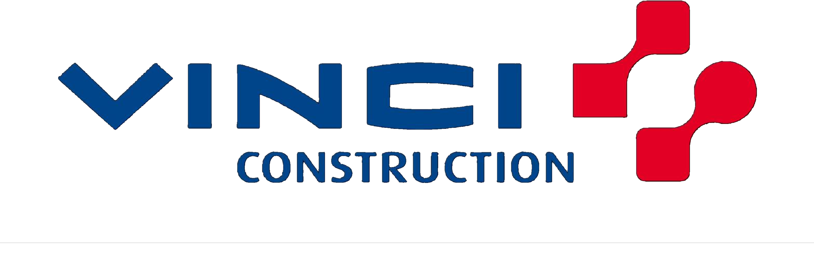

Poupard Evan,
technicien informatique en alternance.
Étudiant à UFITECH, alternant chez Vinci Construction. Passionné d'infrastructure réseau et de cybersécurité — ce portfolio documente mes situations professionnelles, compétences et veille technologique au fil de la formation.
// Formation × Alternance
École & entreprise

01
Entreprise
Présentation de Vinci Construction et de ma mission de technicien informatique en alternance.
Découvrir → 02Compétences
Vue d'ensemble des compétences acquises en entreprise et à l'école, alignées sur le référentiel E4.
Consulter → 03Situations professionnelles
Missions concrètes réalisées en entreprise : contexte, déroulé technique et résultats.
Voir les missions → 04Veille technologique
Suivi de l'actualité IT et cybersécurité, méthode de veille et exemples détaillés.
Lire la veille →